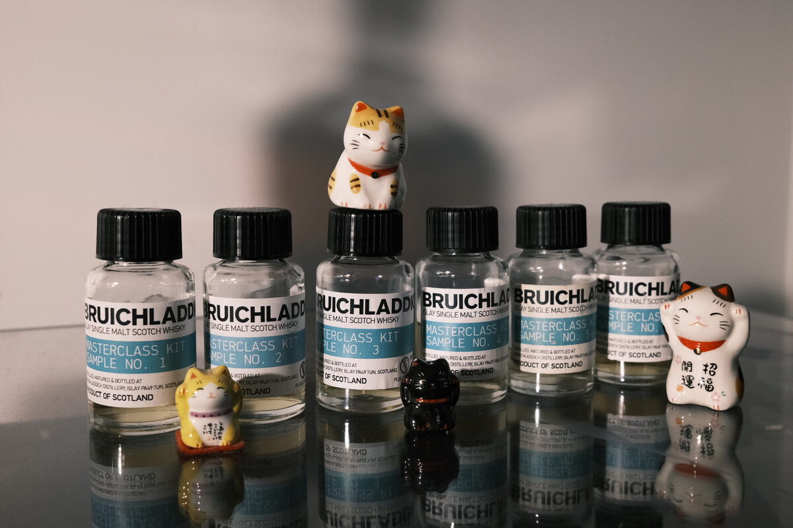

Bruichladdich "Islay Barley" 2004 16 years 58.4% (first fill bourbon, Feis Ile 2021 masterclass sample 2)
Second of the 2021 Feis Ile masterclass drams from Bruichladdich. The first harvest of barley on Islay.
Colour Gold.
Nose Buttery and estery, alcoholic. Green leaves, unripe bananas, green mangoes. Dry barley and muesli. Burnt caramel and toast. Doughy. With water, the greenness resolves more clearly into strong floral notes.
Palate Floral and very green. Aperitif-like. Vanilla and muesli. Some tropical fruits, pawpaw. Doughy. Thick and oily, a little chalky. With water, lemon juice, citrus candies, liquorice. Oak, spices.
Finish Fake bananas and cookie dough. Over-extracted tea. Raw sugar. Toffee. With water, liquorice and orange peels. Very long and hot.
Comments Quite hot, takes water very well. Terroir certainly is a thing. 84/100.

Posted by Dominic on 17 Jun 2021